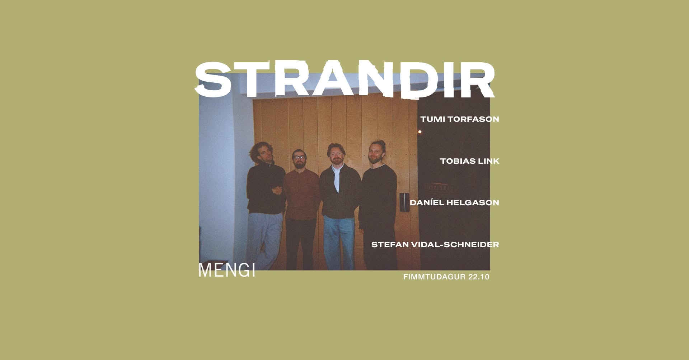
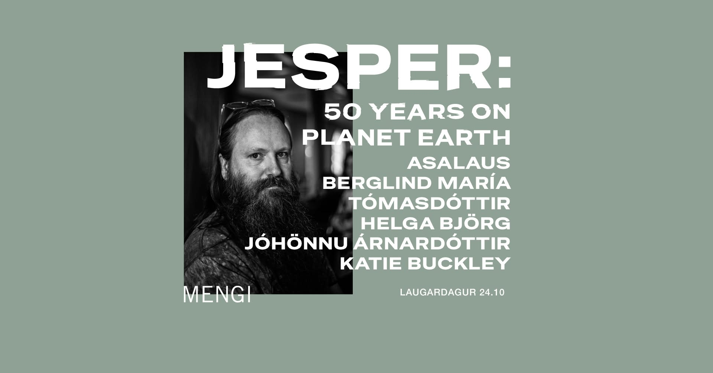
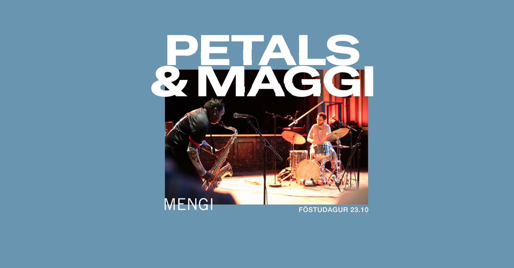
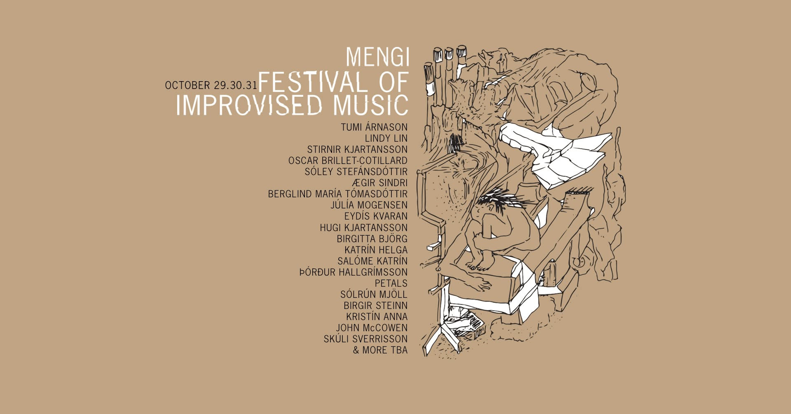
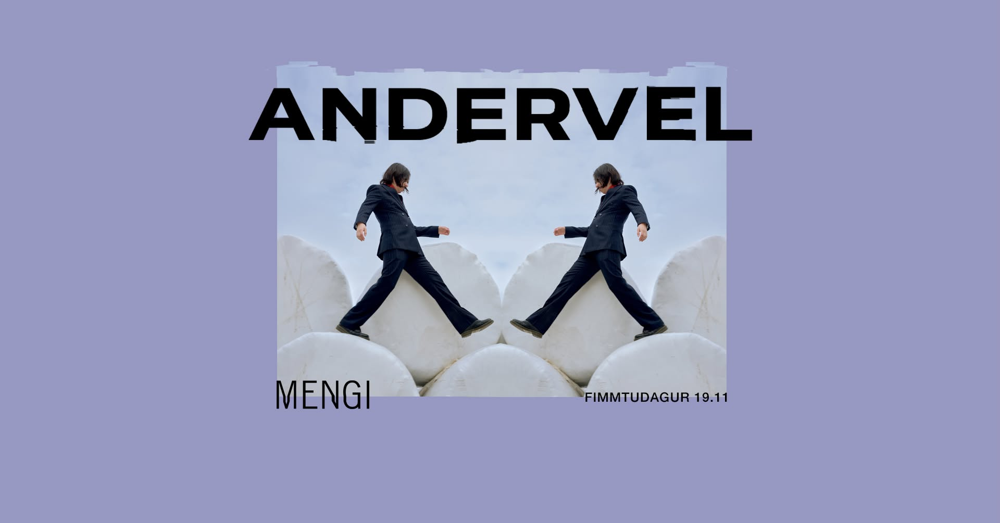
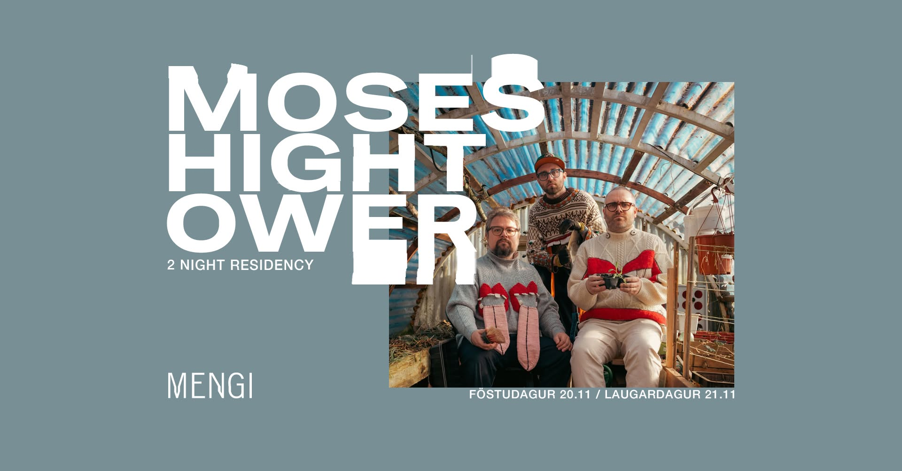
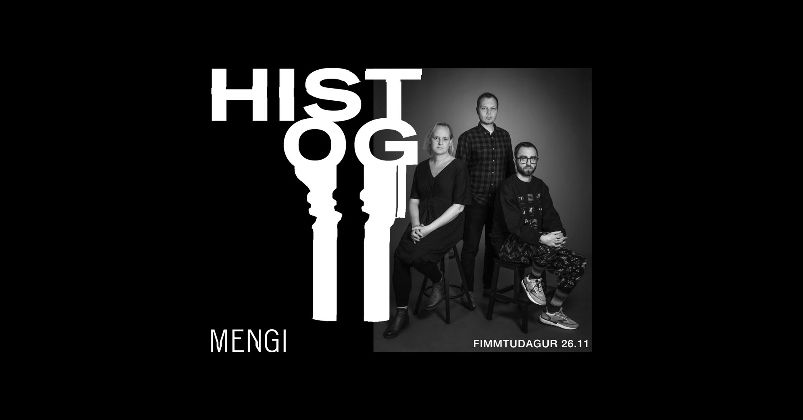

Upcoming Events

THU 22.10 Strandir & Rebekah Hong (IS/DE)
Tickets Thursday, October 22nd STRANDIR (IS/DE) doors 19:30 / show 20:00 2500kr / 2000kr students / pay what u can Tumi Torfason : trumpet Tobias Link : trombone Daníel Helgason : guitar & electronics Stefan Vidal-Schneider : drums & electronics Strandir is a German/Icelandic quartet that has been working intermittently for just over a year. A series of coincidences unexpectedly brought the group together to discover a new sonic landscape to explore. A vast space spanning everything from the sparse to the dense, from the acoustic to the electronic and from the improvised to the written. Since their debut as a trio in Mengi last year they have since added a fourth member, performed in Denmark and Germany, recorded material that will soon be released and found their collective voice through free improvisation sparked by simple themes. The group returns to Mengi for a new rendition of their sonic image.

SAT 24.10 Jesper Pedersen: 50 Years On Planet Earth
Tickets Saturday, October 24th JESPER PEDERSEN: 50 YEARS ON PLANET EARTH doors 19:30 / show 20:00 2500kr / 2000kr students / pay what u can Jesper Pedersen is celebrating 50 years on Planet Earth with a concert at Mengi. For this half-century celebration, Jesper will be joined by Ása Önnu Ólafsdóttir (Asalaus), Berglind María Tómasdóttir, Helga Björg Jóhönnu Árnardóttir and Katie Buckley for an evening of music, sound, improvisation and collaboration. Expect electronics, acoustic instruments, strange sounds, unexpected combinations and probably a few surprises. Jesper is a Reykjavík-based composer, sound artist, performer and educator. Working with electronic sound since the 1990s, his practice spans electroacoustic music, experimental composition, sound art, installation and improvisation. He performs on modular synthesizers, electronics, theremin and unconventional instruments, exploring texture, noise, drone and spatial sound, both solo and in collaboration with others. https://jesper.is

SUN 25.10 petals & Magnús Trygvason Elíassen
Tickets Sunday, October 25th PETALS & MAGNÚS TRYGVASON ELÍASSEN doors 19:30 / show 20:00 2500kr / 2000kr students / pay what u can petals : flutes, shakuhachi, bass clarinet, b-flat clarinet, piano, tenor saxophone, bells, small percussion Magnús Trygvason Eliassen : drums, percussion petals & magnús invite you to listen to two sets of their new duo project frímínútur, icelandic for recess or playtime where they try to recreate the musics of the playground. https://peterokalule.bandcamp.com/album/fr-m-n-tur tree whistles you over, one who mutters plus minus in leaf margin’s stealth is already there, s-n-e-m-m-a for the skipping time, chime, chase elastic circles braceletting afterthought of double-that, flick-of-the tryst the side-grove secreting the line. burr bells, spells away in the canopy beholds all the turning points in the game w/o reporting back, takk fyrir for that berried half of dangling legged snarl. a clue, rope waved below ligules of grass to unseek this this, sometimes, sometimes ~ Katy Lewis Hood

29.10 - 31.10 FESTIVAL OF IMPROVISED MUSIC #1
Tickets MENGI PRESENTS: FESTIVAL OF IMPROVISED MUSIC #1 doors 19:30 / show 20:00 3 sets per night / poetry, music, poetry, music, poetry, music Night 1: Thursday, 29.10 Wet Flute Trio OBC Sóley & Ægir Night 2: Friday, 30.10 Berglind María Tómasdóttir & Júlía Mogensen Eydís Kvaran Vocal Ensemble petals Trio (petals, Sólrún Mjöll, Birgir Steinn) Night 3: Saturday, 31.10 Concret PH (John McCowen, Stirnir Kjartansson, Birgir Steinn, Sólrun Mjöll) Kristín Anna Ensemble Skúli Sverrisson Ensemble more info tba promos feat. art by Vilhjálmur Yngvi Hjálmarsson

THU 19.11 Andervel
Tickets Thursday, November 19th ANDERVEL doors 19:30 / show 20:00 2500kr / 2000kr students / pay what u can Earnest, intimate, heartfelt, delicate: Andervel is the music project of indie-folk artist José Luis Anderson. Born in Mexico, based in Iceland, Anderson creates a unique brand of folk music, seen through the lens of multicultural identity. Andervel draws from a broad lineage of lyric-driven songwriting rooted in the folk tradition, creating intimate, expressive works whose emotional directness continues to resonate in live performances. Defined by a timeless voice and carefully crafted lyrics moving seamlessly between Spanish, Icelandic, and English. “A breathtaking folk composition that drifts in like a warm summer breeze and settles somewhere deep in the chest.” Atwood On Ironclad and Palm Trees, Andervel’s debut album, the musician unveils his most fully realised and culturally interwoven work to date. A folk-leaning, multilingual record shaped by migration, memory and the meeting of two homelands. Where the warmth of Mexico meets the windswept quiet of Iceland For more information www.andervel.com

20.11 - 21.11 Moses Hightower: 2 Night Residency
Tickets MOSES HIGHTOWER: 2 NIGHT RESIDENCY Friday, November 20th / Saturday, November 21st doors 19:30 / show 20:00 4500kr / 4000kr students MORE INFO TBA TICKETS: NIGHT ONE (20.11) NIGHT TWO (20.11)

THU 26.11 HIST OG
Tickets Thursday, November 26th HIST OG doors 19:30 / show 20:00 2500kr / 2000kr students / pay what u can Eiríkur Orri Ólafsson: trumpet, electronics Róberta Andersen: guitar, bass, synth Magnús Trygvason Elíassen: drums, percussion Founded in 2017 to distil a murky blend of jazz and electronic music, hist og is a trio featuring Eiríkur Orri Ólafsson on trumpet and electronics, Róberta Andersen on guitar, bass and synth, and Magnús Trygvason Eliassen on drums and percussion. Through the lens of their shared musical language, they explore a Day-Glo lit ruminative world of improvisation, jazz and electronic music. Hist og has released four albums, days of tundra (2019), hits of (2020), holy ghost of (2023), and Hist Highness (2026). the first three records have received wide praise, harvesting six nominations to the Icelandic Music Awards, a seat on the venerated Kraumur list in 2019 and 2020. Days of Tundra was named "improv of the year" by Morgunblaðið in 2019. Music critic Arnar Eggert Thoroddsen wrote "smashing stuff … every song is rigidly stamped by the seal of this super-trio." Kevin Whitlock of Jazzwise wrote this about their 2024 Reykjavík Jazz Festival appearance: "they are at once thunderous, producing huge walls of sound, and spacey; while also laying down serious grooves. […] They'd go down a storm at a venue like London's Café OTO – let's hope they visit the UK soon." The members of hist og have worked with countless outfits over the years, such as múm, Sin Fang, Amiina, Sigur Rós, Kira Kira, Seabear and others. they have also collaborated with supreme jazz entities such as ADHD, Hilmar Jensson, Skúli Sverrisson and Mógil. ------ Tríóið hist og var stofnað í lok árs 2017 til þess að rugla saman reitum raf-og djasstónlistar. Tríóið skipa Eiríkur Orri Ólafsson, sem leikur á trompet, trommuheila og hljómboð, Róberta Andersen á gítar, bassa og hljómborð og Magnús Trygvason Eliassen á trommur og slagverk. Meðlimir tríósins beina stækkunarglerinu að sameiginlegum snertifleti sínum, með innhverfri, úthverfri og slagþungri blöndu af djass, raf-, og spunatónlist sem kemur víða við. hist og á að baki fjórar plötur, Days of Tundra (2019), hits of (2020), holy ghost of (2023), og Hist Highness (2026). Fyrri þrjár plöturnar hlutu mikið lof og hefur hljómsveitin landað þremur tilnefningum til Íslensku Tónlistarverðlaunanna í djassflokki bæði árin, sem og sæti á Kraumslistanum 2019 og "Spuni Ársins" sama ár hjá Morgunblaðinu. Um hits of skrifaði Arnar Eggert Thoroddsen hjá Morgunblaðinu ma. "Hörkustöff … stimpill þessa ofurtríós kirfilega á öllum smíðum." Allar plöturnar hafa hlotið sæti á Kraumslistanum. Breska tímaritið Jazzwise hafði þetta að segja um tónleika þeirra á Jazzhátíð í ágúst síðastliðnum: "they are at once thunderous, producing huge walls of sound, and spacey; while also laying down serious grooves. […] They'd go down a storm at a venue like London's Café OTO – let's hope they visit the UK soon." Meðlimir hist og hafa starfað um árabil með hinum ýmsustu hljómsveitum, svo sem múm, amiinu og Sin Fang, Sigur Rós, Kiru Kiru, Benna Hemm Hemm og Seabear, ásamt ótal samstarfsverkefna á sviði djasstónlistar með ADHD, Hilmari Jenssyni, Skúla Sverrissyni og Mógil.